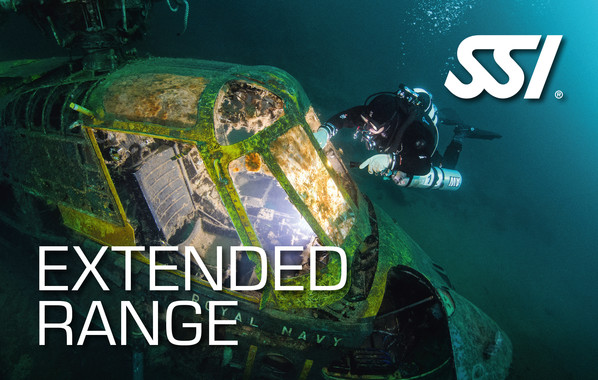
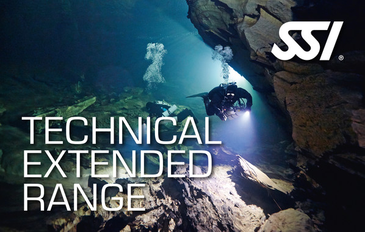
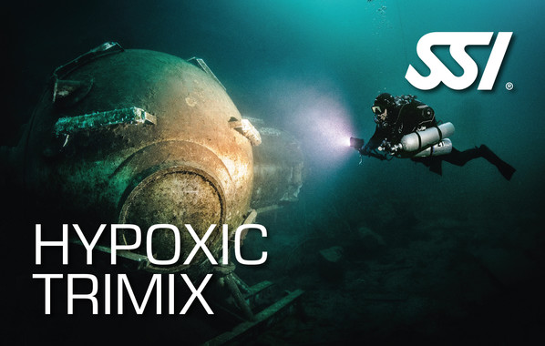
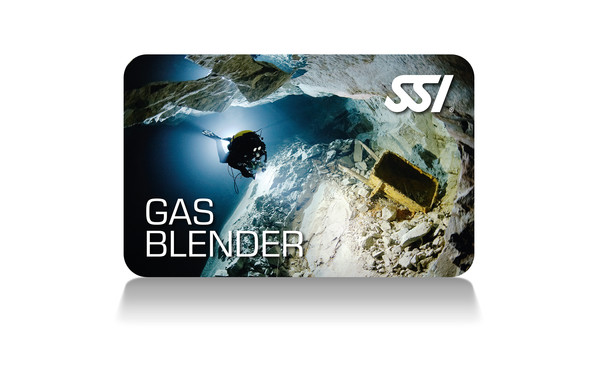
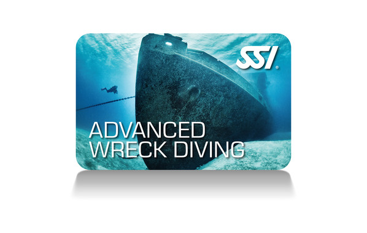
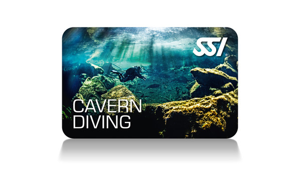

Cursos Técnicos XR
Formación avanzada para buceo técnico de mezclas de gas. Desde Extended Range hasta Trimix Hypóxico, estos programas te llevan más allá de los límites del buceo recreativo.
El buceo técnico requiere planificación rigurosa, equipo especializado y entrenamiento específico. SSI te forma paso a paso hacia la cima del buceo.

Nuestros Cursos Técnicos XR
Haz clic en cada curso para ver más información detallada.
Extended Range Nitrox Diving
40m con nitrox hasta 50%

Extended Range
40m con mezclas nitrox, descompresión

Technical Extended Range
60m, dos cambios de gas, descompresión múltiple

Trimix Hipóxico
80-100m, mínimo 3 botellas etapa, helio

CCR Technical Extended Range
60m con circuito cerrado, bail-out

Extended Range Gas Blender
Mezclar nitrox/trimix, matemáticas, física

Advanced Wreck Diving
Penetración en pecios, cabos seguridad, luces

Buceo en Cavernas
40m, zona de luz, equipo especializado
Descripción
El programa Extended Range Nitrox Diving SSI te cualifica para realizar inmersiones a 40 metros de profundidad utilizando mezclas de nitrox hasta 50%. El programa se puede realizar con tu Sistema Total de Buceo estándar o con una botella grande con válvula H o Y.
Este curso es el primer paso hacia el buceo técnico de mezcla de gases, proporcionando las habilidades necesarias para planificar y ejecutar inmersiones con nitrox más allá de los límites recreativos.
Contenido del curso
- Planificación de inmersiones Extended Range
- Uso de mezclas nitrox hasta 50%
- Gestión de gas y consumo
- Procedimientos de seguridad específicos
- Uso de komputer para Extended Range
Requisitos previos
- Certificación Open Water Diver
- Certificación Nitrox (o equivalente)
- Ser mayor de 15 años
- 24 inmersiones registradas
Información adicional
- Duración: 2-3 días
- Nivel: Avanzado
- Profundidad: hasta 40m
Descripción
El programa Extended Range SSI te cualifica para realizar inmersiones a 40 metros de profundidad utilizando mezclas de nitrox hasta 50%. El programa se puede realizar con tu Sistema Total de Buceo estándar, una botella grande con válvula H o Y o una bibotella.
Recibirás la certificación Extended Range SSI después de completar este programa, que incluye paradas de descompresión obligatorias.
Contenido del curso
- Planificación de inmersiones con descompresión
- Uso de mezclas de nitrox para Extended Range
- Paradas de descompresión y gestión del nitrógeno
- Uso de komputer con modos Extended Range
- Procedimientos de emergencia en profundidad
Requisitos previos
- Certificación Extended Range Nitrox Diving
- Ser mayor de 15 años
- 50 inmersiones registradas
Información adicional
- Duración: 2-3 días
- Nivel: Avanzado
- Profundidad: 30-40m
Descripción
La intención del programa Technical Extended Range es proporcionar a los buceadores con la formación necesaria para planificar y realizar independientemente inmersiones con dos cambios de gas, múltiples paradas de descompresión a profundidades de hasta 60 metros.
Recibirás la certificación Technical Extended Range SSI (con o sin Trimix) después de finalizar este programa, utilizando equipo de buceo especializado y procedimientos específicos.
Contenido del curso
- Planificación de inmersiones técnicas a 60m
- Dos cambios de gas para descompresión
- Uso de mezclas trimix (opcional)
- Configuración de equipo técnico
- Procedimientos de emergencia en inmersiones técnicas
Requisitos previos
- Certificación Extended Range SSI
- Ser mayor de 18 años
- 100 inmersiones registradas
- Certificado médico de aptitud
Información adicional
- Duración: 4-5 días
- Nivel: Técnico
- Profundidad: hasta 60m
Descripción
Este es la cima del buceo técnico. Aquí utilizarás todos los conocimientos, habilidades, equipo y experiencia de toda tu formación anterior y empujarás tus límites al extremo.
Hay dos caminos: uno te lleva a 80 metros y el otro a 100 metros utilizando el mismo Sistema Total de Buceo Extended Range que utilizaste en programas anteriores. Sin embargo, ahora utilizarás un mínimo de tres botellas de etapa para el gas de descompresión y el gas de viaje.
Contenido del curso
- Inmersiones a 80-100 metros con trimix hipóxico
- Mínimo tres botellas de etapa para descompresión
- Gas de viaje y gases de descompresión
- Planificación de inmersiones trimix extremas
- Gestión de gas multi-etapa
Requisitos previos
- Certificación Technical Extended Range SSI
- Ser mayor de 18 años
- 150+ inmersiones registradas
- Certificado médico de aptitud
- Experiencia previa en descompresión profunda
Información adicional
- Duración: 6-8 días
- Nivel: Elite
- Profundidad: 80-100m
Descripción
La intención del programa CCR Technical Extended Range es proporcionar a los buceadores con la formación necesaria para planificar y realizar independientemente inmersiones con descompresión a profundidades de hasta 60 metros con un compañero certificado, utilizando una unidad CCR (Circuito Cerrado de Oxígeno) y varias botellas de etapa para el propósito de bail-out.
Este curso combina las ventajas del buceo CCR con las técnicas de buceo técnico para profundidades que serían imposibles o prohibitivas con mezclas abiertas.
Contenido del curso
- Operación de unidad CCR a profundidades de 40-60m
- Planificación de inmersiones CCR con descompresión
- Procedimientos de bail-out (escape de emergencia)
- Configuración multi-etapa para CCR
- Gestión de diluyentes y oxígeno
Requisitos previos
- Certificación Extended Range SSI
- Certificación en uso de CCR (equivalente)
- Ser mayor de 18 años
- 100+ inmersiones registradas
- Certificado médico de aptitud
Información adicional
- Duración: 4-5 días
- Nivel: Técnico
- Profundidad: hasta 60m
Descripción
Este programa enseña las habilidades y conceptos necesarios para mezclar de forma segura el nitrox y trimix a base de helio para el buceo de mezclas de gas. Este es un programa sin inmersiones que teaches the mathematics, physics and techniques necesarias para mezclar gases de respiración con seguridad.
Es esencial para quien quiera preparar sus propias mezclas de gas o trabajar como gas blender profesional.
Contenido del curso
- Matemáticas y física de los gases
- Cálculo de mezclas nitrox y trimix
- Técnicas de mezcla con helio
- Análisis de contenido de oxígeno
- Procedimientos de seguridad en mezcla de gases
Requisitos previos
- Ser mayor de 18 años
- Sin certificación requerida (buceadores preferidos)
Información adicional
- Duración: 2 días
- Nivel: Especialidad
- Sin inmersiones
Descripción
Este programa proporciona el conocimiento y la experiencia necesaria para realizar inmersiones de penetración en ambientes bajo techo en pecios. Aprenderás cómo utilizar técnicas específicas de flotabilidad y aleteo, colocar cabos de seguridad, y el uso adecuado de luces.
Recibirás la certificación de Especialidad SSI Advanced Wreck Diving después de finalizar este programa, que puede realizarse con configuración estándar o Extended Range.
Contenido del curso
- Técnicas de flotabilidad específicas para pecios
- Colocación de cabos de seguridad
- Uso de luces en ambientes oscuros
- Penetración en espacios bajo techo
- Gestión de visibilidad reducida
Requisitos previos
- Certificación Open Water Diver
- Ser mayor de 15 años
- 24 inmersiones registradas
Información adicional
- Duración: 2-3 días
- Nivel: Avanzado
- 4-5 inmersiones
Descripción
Este programa proporciona el conocimiento y experiencia necesaria para planificar y realizar independientemente inmersiones de penetración en cavernas dentro de la zona de luz a profundidades inferiores a 40 metros.
Aprenderás cómo utilizar equipo especializado para el buceo en cavernas, conceptos de la gestión de gas y habilidades de parejas de compañeros para poder realizar inmersiones en cavernas con seguridad.
Contenido del curso
- Uso de equipo especializado para cavernas
- Conceptos de gestión de gas
- Habilidades de buceo en pareja
- Técnicas de navegación en cavernas
- Procedimientos de emergencia específicos
Requisitos previos
- Certificación Advanced Adventurer o equivalente
- Ser mayor de 18 años
- 50+ inmersiones registradas
- Experiencia en visibilidad reducida
Información adicional
- Duración: 3-4 días
- Nivel: Avanzado
- Profundidad: hasta 40m